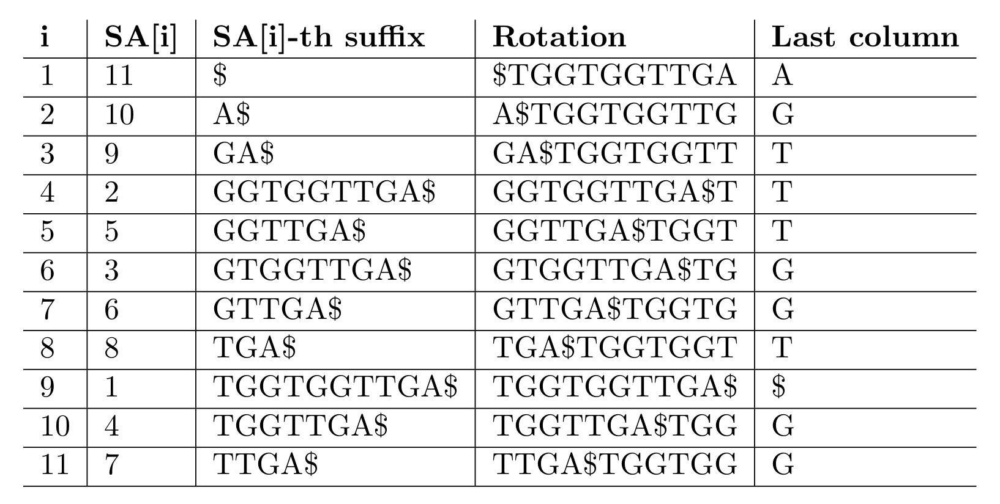
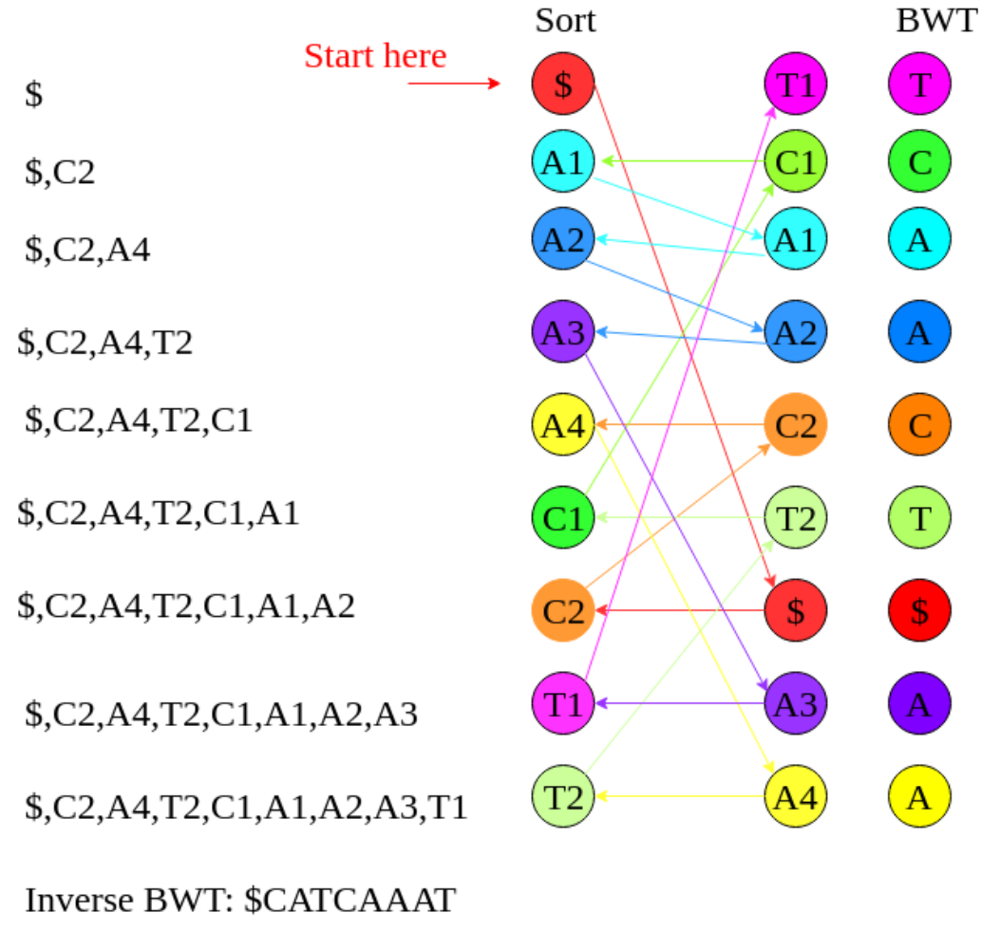
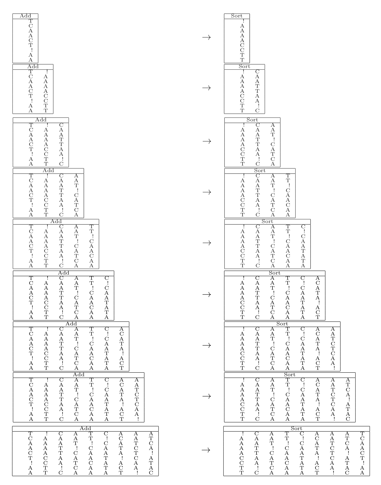
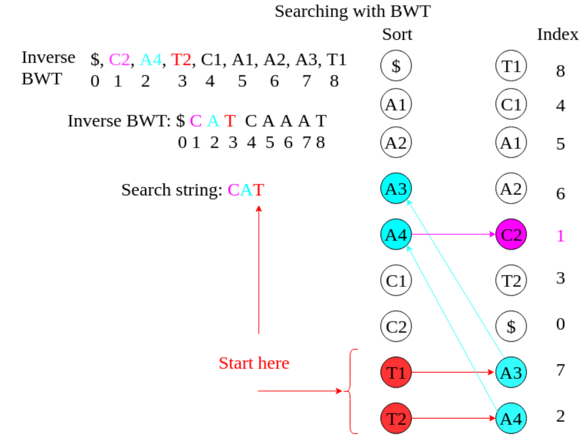

Exercise sheet 10: Introduction to Mapping
Exercise 1
Question 1A
Extract the Burrows-Wheeler Transform B(S) of \(S = TGGTGGTTGA\$\).
Solution
\(B(S) = AGTTTGGT\$GG\)

Question 1B
Invert the Burrows-Wheeler-Transform \(B(S) = TCAACT\$AA\) to obtain S.
Hint 1
You can get the first column \(F(S)\) of the Burrows Wheeler Matrix via counting and sorting the letters since it has a very predictably structure.
\(F(S) = \$AAAACCTT\)
Hint 2
Use the last-first mapping to assign indices to the corresponging letters in the first \(F(S)\) and the last column \(B(S)\)
\(F(S) = \$_1A_1A_2A_3A_4C_1C_2T_3T_4\)
\(B(S) = T_1C_1A_1A_2C_2T_2\$_1A_3A_4\)
Solution 1

Solution 2
Step-by-step method:

Question 1C
Search for \(CAT\) in \(B(S) = TCAACT\$AA\).
Solution

Exercise 2
Read the publication on the bwa-mem aligner at https://arxiv.org/abs/1303.3997 and pay particular attention to the re-seeding and chaining features of the algorithm. Now consider a read \(R = CCCCGTTTT\) and a reference genome \(T = ...CCCCATTTT...CCCCGA...AGTTTT...\) and explain step-by-step how re-seeding and chaining let bwa-mem let recover the correct best alignment of \(R\) to \(T\).
Question 2A
What are the original SMEMs that get generated?
Solution
The original MEMs are CCCCG and GTTTT.
Question 2B
Would these SMEMs lead to discovery of the best possible alignment?
Solution
No, because it would not lead to a best possible match in the reference genome. The current seeds are too specific and we may miss the seeds that lead to the best mapping (CCC- CATTTT), therefore we need to reseed.
Question 2C
Which shortened new SMEMs are discovered with re-seeding (assume re-seeding gets perfor- med despite the below-threshold length of the SMEMs)?
Solution
Re-seeding around the central base of each MEM leads to discovery of CCCC and TTTT (both occur once more often than the originals).
Question 2D
What is the effect of chaining of colinear seeds?
Solution
The two new seeds are colinear on R and T , and can be merged into a chain, so only one local alignment has to be performed.
Exercise 3 - Programming assignment
Programming assignments are available via Github Classroom and contain automatic tests.
We recommend doing these assignments since they will help you to further understand this topic.
Access the Github Classroom link: Programming Assignment: Sheet 10.